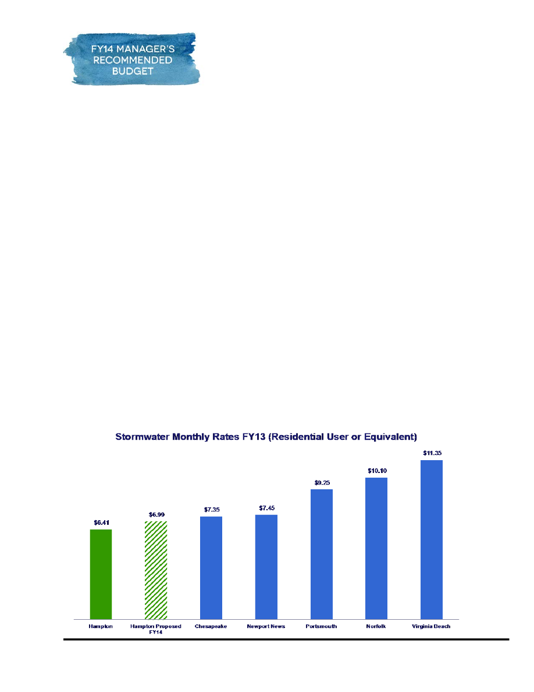
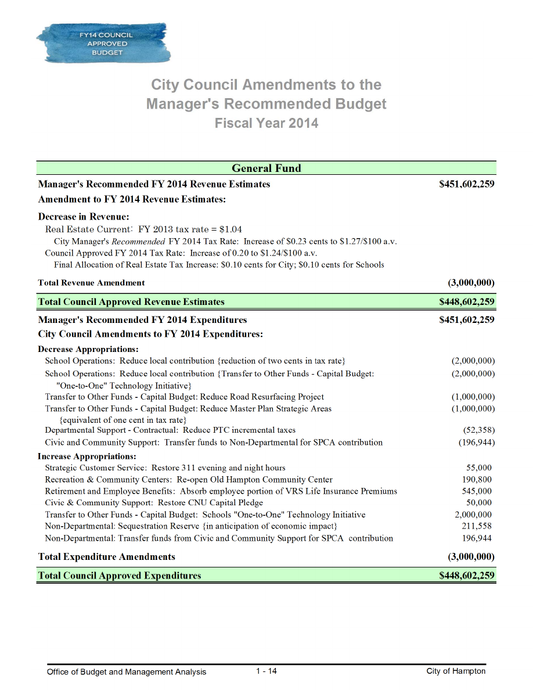

Manager’s Message ………………………………………………………………1-1
City Council Amendments to the Manager’s Recommended
Fiscal Year 2014 Budget…………………………………………………
…..1-
14
This section includes the City Manager’s recommended budget message which outlines the
major changes in revenues and expenditures that significantly impacted the City’s operating
budget and addresses any major policy decisions that impact this budget. The City Council
amendments summarize all changes made to the Manager’s Recommended budget
submitted on April 15. Strategies utilized to balance the City’s budget along with their
related impact on the General Fund departments and the City’s organizational chart
including all funds is also included.
Office of Budget and Management Analysis City of Hampton
MANAGER’S BUDGET MESSAGE

MANAGER’S MESSAGE
Office of Budget and Management Analysis 1 - 1
City of Hampton
April 12, 2013
Mayor Ward, City Council Members and Citizens,
I am pleased to transmit the FY 2014 Manager’s Recommended Budget, totaling
$451,602,259, a 4.91% increase over the adopted FY 2013 budget. Of this amount, the City
portion is $250,604,182 and the School portion is $200,998,077.
These totals reflect the highest level of investment the community and City Council
might want to make next year, based on significant public involvement and feedback. This level
and the associated required real estate tax rate increase are based on full funding of investment
options discussed with the community over the last several months. In light of the significant
feedback, I feel compelled to offer a recommended budget that allows for consideration of all the
options we asked the public to consider.
It's never a good time to suggest a tax increase, but with sequestration looming and the
recession lingering, it's particularly difficult. Some members of our community are still in
precarious financial situations. Nevertheless, I was impressed by the levels of support that the
community voiced over the past six weeks of conversations about the future of our city. Our
homeowners – our taxpayers – may not be exactly happy with an increase, but approximately
90% consistently said they recognize the need to pay for the services they receive and the
importance of sustaining the quality of life we enjoy in Hampton.
In accordance with that process, which presented several scenarios to the public, this year
the Manager’s Recommended Budget includes, for the first time, several options to mirror the
dialogue we have had with the community. Lower funding levels and tax rate adjustments are
possible if the community and Council ultimately decide on a decreased investment schedule or
to simply protect existing services.
Ultimately, the budget level and corresponding tax rate need to reflect the level of
investment the community and Council feel are most appropriate for the City at this time.
Budget Challenges
Our community budget engagement began early this year, with a joint presentation by
School Superintendent Dr. Linda Shifflette and me to the City Council and School Board. That
presentation was then taken “on the road,” sharing the details and asking residents to share their

MANAGER’S MESSAGE
Office of Budget and Management Analysis 1 - 2
City of Hampton
thoughts about the challenges we faced. More than 800 residents came out to those presentations
and expressed their views. In addition, more than 1,500 expressed their opinions online.
Our presentation outlined the challenges both the City and School System have faced in
the last several years. Those challenges include, but are not limited to:
• Repeated real estate value losses, due to the national recession and overall
housing market corrections
o
According the Assessor’s land book, the loss of real estate value has equated
to a loss of more than $14 million since FY 2010 – the equivalent of 14 cents
on the real estate tax rate
• Federal and State government disinvestment in local governments and especially
school systems
o
State support to the local school system decreased by $21 million between FY
2009 and the current fiscal year – the equivalent of 21 cents on the real estate
tax rate
o
The State required local governments to provide a portion of local revenues to
help balance the State budget for the last four years – that has totaled $5.7
million of assistance to the State
o
At the same time, the State passed on costly mandates to the local
government, such as the Line of Duty Act and the disabled veteran real estate
tax exemption. Together, these have had reduced local revenues by $1.1
million annually
• Cost pressures such as rising fuel, health, pension and regional agency costs
o
Fuel increases, for instance, have increased our costs significantly, given the
number of public works vehicles, police cars, fire trucks and ambulances
o
Federal health care requirements have impacted the City as an employer, just
as they have impacted other employers across the nation
o
Mandatory increases for the regional jail, HRT and regional animal shelter for
FY 2014 have exceed $1 million – these are costs we are required to fund
We have instituted many cost-saving measures over the last several years. When the
national recession hit and real estate revenues declined, we opted not to raise the real estate tax
rate to offset those losses. Instead, we cut costs, including but not limited to: downsizing of
internal, administrative and mid-level management staff; consolidating departments internally
MANAGER’S MESSAGE
Office of Budget and Management Analysis 1 - 3
City of Hampton
and with the School System and Newport News; deferring maintenance/capital needs; and
deferring salary increases for staff. Since the recession began, the City has cut almost 10% of its
general funded workforce and the Schools cut about 12% of their workforce.
Both the City and the School System conscientiously chose to make cuts that did not
directly affect residents, avoiding reductions of service delivery as much as possible. However,
having already made those cuts, further reductions to internal services, mid-management and
other front-line positions are not possible without major negative consequence. Various measures
of efficiency demonstrate that Hampton city and school operations are managed with fewer
people and operating dollars than many of our peer localities. The following chart was prepared
last year but tells the story well. It is a comparison of the per capita manning each city uses to
provide governmental services.
That is why Dr. Shifflette and I detailed the likely cuts to city and school services that
would be required if a tax rate adjustment was not made this year. It’s why we felt further cuts
would represent disinvestment in our community, our quality of life and -- especially in the case
of the school system -- our youth.

MANAGER’S MESSAGE
Office of Budget and Management Analysis 1 - 4
City of Hampton
Dr. Shifflette and I shared preliminary budget scenarios that forecast a $7.2 million
shortfall for the City budget and an $8.9 million shortfall for the School budget. We explained
that to protect remaining services from elimination would require a maximum of a 16-cent tax
rate increase. This potential 16-cent tax rate increase was labeled the Protect scenario.
A funding scenario that began to reinvest in city and school services was also offered for
public comment. Specifically, that scenario included an additional $4 million each for City and
School capital investments, for a total of $8 million. This level of reinvestment would require an
additional 8-cent tax rate increase. This potential 24-cent tax rate increase was labeled the
Invest scenario.
A Budget Built on Community Values
Residents participating in the budget sessions overwhelmingly supported a tax rate
increase over major cuts to city and school services. Approximately 90% of those who
participated in either the in-person or on-line polling events expressed a willingness to raise the
tax rate this year. Only 10% expressed a strong desire to address the budget shortfalls with cuts
to services exclusively.
Accordingly, it should not be surprising that this Recommended Budget calls for an
increase in the real estate tax rate. This is the first real estate tax rate increase since FY 2002,
when the rate was increased to $1.27. Shortly after FY 2002, the City Council began
aggressively decreasing the real estate tax rate, ultimately lowering it to the current rate of $1.04
in FY 2009, where it has remained. While the rate was lowered to offset rapidly increasing
housing values, it was never increased to offset the housing value losses that resulted from the
national recession and overall housing market value corrections.
Protect or Invest?
My challenge this year was not whether to propose an increase in the real estate tax rate
but rather how much of an increase to propose. Community sentiment was fairly evenly split
between whether the tax rate should be adjusted only to protect services or to reinvest in the
capital and infrastructure needs of the City and the School System.
Fortunately, revenues improved slightly from our original budget assumptions, which had
predicted that a 16-cent tax rate increase would be required just to preserve existing services.
Additionally, the community expressed a willingness to scale back in some limited ways. The
changes I could comfortably recommend, coupled with additional cuts to some city operations,

MANAGER’S MESSAGE
Office of Budget and Management Analysis 1 - 5
City of Hampton
enabled us to bring down the tax rate increase required to protect remaining city and school
services to 13 cents. Of that 13-cent tax rate increase, 5 cents is associated with protecting the
remaining city services, while 8 cents is associated with protecting school services.
Had the community not expressed such a strong desire to begin to consider reinvestments
in both city and school services, this Recommended Budget would have called for that 13-cent
real estate tax increase.
However, since there was a very strong and solid expression by the community to look at
reinvestment in city and school capital needs, I feel compelled to present a scenario that would
allow Council consideration of that option. Any amount of funding above the 13-cent tax rate
increase would allow for reinvestment in our city and/or school services, and that amount could
be anywhere up to the additional 10-cent increase (or 23-cent total increase) that is included in
this Recommended Budget total funding level.
Ethically and legally, we must advise the public of the maximum tax rate increase and
associated departmental funding levels being considered. Therefore, I included in my Manager’s
Recommended Budget the highest level of investment that might be made. This does not mean
that I believe the 23-cent proposal is the only viable solution for the community at this time.
Indeed, to reflect the options we can consider during this final phase of budget development, I
have included three funding levels for Council to consider. Of course, there are an infinite
number of options, but the following three scenarios offer a range of investment opportunity that
I believe honors the community dialogue.
Scenario A – Protect The Bulk of Existing Services at a 13-cent tax rate increase – 8 cents for
Schools, 5 cents for City operation
Scenario A includes an $8 million increase in the recurring local contribution to the
Schools above what the existing tax rate would provide, funded with an 8-cent real estate tax
increase. Although the School System had originally projected the need for a $9 million increase,
they were able to decrease that by $1 million, once final adjustments for the projected enrollment
loss and final city revenue estimates were completed. Scenario A does not include any of the
major reductions in School services that were discussed with the community over the last several
months.
Scenario A fully funds the City’s required increases including debt service, the employer
share of the health insurance increase and required contributions to regional agencies. This
budget also includes a salary increase for employees for the first time since 2008. This increase

MANAGER’S MESSAGE
Office of Budget and Management Analysis 1 - 6
City of Hampton
to their base salary will include two components: a 1% cost of living adjustment and an amount
equivalent to the bonus that employees received last year. In this way, most employees should
experience the first increase – albeit minimal – in take-home pay in many years. The amounts are
structured to accomplish two goals: recognize top performers and also provide a larger
percentage boost to those at the lower end of the salary scale.
I feel strongly that this nominal pay increase is necessary to protect city and school
services. Our teachers, police officers, firefighters, public works and all city/school employees
are vested with awesome responsibility. They are helping to raise our children and protect us.
They have been asked to do more with less for too long. Their take-home pay has gone down
each of the last several years, as they have taken on ever-increasing shares of health insurance
and other benefits. We are now starting to lose some of our best and brightest public servants to
other localities that have begun to give pay increases to their employees. If we want to keep our
valued employees, we must begin to reinvest in them.
This pay increase is not as large as the workforce deserves. Indeed, with the employee
share of the health insurance premium increases we will pass on, most will just keep pace with
this year’s inflation. I worry that our pay is not keeping pace with surrounding localities and
wish we could do more. However, I also understand that the economy remains weak and that
many in our community are still underemployed and/or facing potential furloughs, so I decided
not to push for more.
Accordingly, I also recommend a continuation of the non-monetary incentives that were
included in last year’s budget, most particularly the bonus “personal days” awarded employees –
one per quarter, that must be used or lost. These days have allowed our workforce to get a much-
needed break away from the job site to deal with personal/family needs. The workforce has much
appreciated these days. While I had intended them to be one-time, our inability to more
dramatically increase pay has left me feeling that these should be continued for one more year.
Finally, I am recommending that we fund a full compensation study to get an
independent perspective on whether our pay schedules are appropriate. For the last several years,
we have attempted to compare our pay by examining other localities’ pay schedules.
Unfortunately, this analysis falls short by not capturing data for all the positions and not
comparing public salaries/benefits to the private sector. The investment in this review will be
immensely helpful in future years, as – hopefully – the economy improves, allowing us to do
even more for our deserving workforce.

MANAGER’S MESSAGE
Office of Budget and Management Analysis 1 - 7
City of Hampton
Original estimates of the city shortfall under Scenario A would have required a 7-cent
real estate tax rate adjustment instead of the 5-cent adjustment now contemplated. However, as
has been done in past years, our base budget was thoroughly scrubbed for additional cuts that
could be made. Approximately $1.8 million was cut from the operating budgets of departments,
including elimination of five vacant full-time positions. We are also merging the Arts
Commission and Coliseum operations and aligning redevelopment responsibilities with the
Hampton Redevelopment and Housing Authority so that our Economic Development’s focus can
be on jobs (business retention and recruitment).
Recommendations for additional expenditure reductions are the result of the public
polling responses. With the public overwhelmingly (65% or more) supporting reductions in
select areas, the following service reductions were deemed acceptable:
• Elimination of the filming and broadcast of the Holly Days Parade: $25,000
• Suspension of the capital contribution to Christopher Newport University until
economy improves: $50,000
• Elimination of specialized newspaper ads: $50,000
• Reduction in 311 hours (evenings, weekends and holidays): $55,000
• Closure of the Old Hampton Community Center: $101,404
Most of these changes will not have negative impact, but I do struggle with the 311
reduction, because about 20% of our call volume comes in during the night and weekend hours. I
have resisted cutting this service for several years because it is a customer convenience in which
I strongly believe. Accessibility to City Hall during non-business hours is a rarity in local
government. Hampton’s long history of accessibility is an asset it offered to residents. However,
given the strong community sentiment to scale back in this area, I reluctantly decided to include
it this year. It is my hope that we can restore after-hours coverage in future years.
I also hope to restore, in the future, the CNU capital contribution commitment. Nearly
fifteen years ago, the Council agreed to make a 20-year commitment of $50,000 per year to help
fund the Ferguson Performing Arts Center. While we may all agree that this is not as high of a
priority as many of our other services, it nonetheless represents a commitment our community
made and it should be honored. That said, I believe we can suspend the payment temporarily,
until the economy further improves. However, if we want people to believe the commitments we
make, we should ultimately fulfill our pledge.

MANAGER’S MESSAGE
Office of Budget and Management Analysis 1 - 8
City of Hampton
The Old Hampton Community Center closure is perhaps the most significant reduction
recommended in this budget. Yet, I feel comfortable making it for many reasons. The facility has
many challenges given its age; if kept open, it will require more than $3 million of improvements
in the near future. There are many recreational facilities, including the YMCA and the YH
Thomas Community Center, that serve this part of the City. Moreover, the closure of this
community center will give us the opportunity to bring on-line the Fort Monroe Community
Center sooner than we would otherwise be able. The opening of the Fort Monroe Community
Center will bring service to a side of the City that has been without a center. It will offer a zero-
entry pool, which is better suited to the needs of the disabled community. Permanent full-time
staff currently at Old Hampton will be shifted to Fort Monroe and the Aquatics Center so that we
end up with a better complement of recreational services citywide.
There were some cuts the public supported that I did not recommend – largely because
reductions in these areas would hurt our business community and our tax base. Those services
included elimination of Bay Days/Regatta funding as well as decreases in turn-around times for
planning/permitting actions. Instead, we are adjusting many of our planning/permitting fees to
help ensure that business customers pay a higher share of the costs.
In summary, Scenario A is a responsible approach to protecting our existing city and
school services. The 13-cent tax rate needed to support this scenario is 3 cents lower than
originally projected. Together, the City and School System made further strategic cuts in our
operating budgets so that we could achieve a smaller rate increase. Should the community and
Council decide not to invest further in city and school services, this scenario will at least ensure
that basic services valued by our residents and business community are protected.
Scenario B – Reinvestment in Community and Council Operating Budget Priorities, an
additional 2-cent tax rate increase to invest in road, school grounds and public space
maintenance. This would require a total real estate tax rate increase of 15 cents.
Over the last several years, we have significantly scaled back on the maintenance and
appearance of our public spaces. This includes our school grounds, our public medians/parks and
our roads. If we want to reverse this trend, we will need to invest additional dollars. Scenario B
builds on Scenario A by adding nearly $1 million for road resurfacing projects, which accelerates
our road resurfacing projects and improves more lane miles. Scenario B also adds nearly $1
million for enhanced school grounds and public space maintenance. All of this work would be
done through outsourcing in the private sector, ensuring that we secure enhancements to the
community without increasing the city’s total payroll.

MANAGER’S MESSAGE
Office of Budget and Management Analysis 1 - 9
City of Hampton
Clearly, these are optional investments. However, I believe they are worthy of
community conversation and Council dialogue. At recent strategic planning sessions, Council
members noted a need to reinvest in public parks and spaces, school grounds and roadway
projects. For us to make the desired improvements, additional funds are needed. The only
question is whether this is the best time to do so. I felt compelled to offer this 2-cent tax rate
proposal as a means for advancing this issue. Given that the real estate tax rate needed to protect
basic city and school services was three cents lower than originally projected, Scenario B
advances an ability to do this work sooner without a higher rate than was already vetted – and
supported – in the community.
Scenario C – Reinvestment in City and School Capital Investments, an additional dedicated 4-
cent tax rate each for City and School capital investments for a total 8-cent additional real
estate tax rate increase. This would require a total real estate tax rate increase of 23 cents.
Scenario C mirrors the Invest proposal originally shared with the community during our
budget engagement sessions. The School System has indicated that it would use the additional
$4 million for capital needs, such as technology and school bus refurbishment/replacement. The
$4 million for City capital needs would be invested in accelerating master plan implementation
in Buckroe, Downtown, Kecoughtan Road corridor, North King Street and Phoebus.
Clearly, these are also optional investments. However, given the strong community
polling support for making such improvements, I have included this option in the budget for final
community consideration. This investment can be scaled as Council wishes. For instance, if the
Council and community wish to make such investments, but at a lower level, the amount funded
and the corresponding tax rate increase can be adjusted accordingly.
Other Tax and Fee Considerations
So far, I have focused on the real estate tax rate changes needed to either protect existing
services or to invest in community priorities. Other possible fee and tax options (in lieu of the
real estate tax rate) were considered; but given that we have had repeated losses in real estate
taxes over the last several years, it seemed the most appropriate area to increase.
Indeed, most residents are paying significantly less than they did prior to the start of the
recession. The following chart depicts the tax bill today compared to what it was in 2008 for
typical homes in sample city neighborhoods. All are paying less today than in 2008, and most are
paying significantly less than they did five years ago.
MANAGER’S MESSAGE
Office of Budget and Management Analysis 1 - 10
City of Hampton
Based on a typical home in
Tax bill today compared with
2008
Riverdale
$462 less
Fox Hill
$374 less
Merrimac Shores
$833 less
Powhatan Park
$447 less
Cherry Acres
$266 less
Bethel Park
$455 less
Aberdeen
$95 less
Michaels Woods
$621 less
Colonial Acres
$630 less
Whealton Heights
$402 less
Regardless of the budget option ultimately chosen by the Council, most residents will still
be paying less next year than they did in 2008. The following chart depicts the total annual
increase for the median value home of $154,300. This analysis assumes the median value home
will have the average 4% decrease in residential value and then applies the various tax rate
increase options to establish how much the total tax bill would increase under each scenario.
Monthly and weekly increases are calculated to establish the impact on the typical household
budget.
Value of home
Annual increase
from FY 2013
Monthly increase
from FY 2013
Weekly increase
from FY 2013
Scenario A – 13 cent
tax rate increase
$128.38
$10.70
$2.47
Scenario B – 15 cent
tax rate increase
$158.00
$13.17
$3.04
Scenario C – 23 cent
tax rate increase
$276.51
$23.04
$5.32
Similar analysis for various housing values established that even under the maximum tax
rate adjustment of 23 cents (to a total rate of $1.27, the tax rate back in FY 2002), few residents
would pay more than they did in the past.

MANAGER’S MESSAGE
Office of Budget and Management Analysis 1 - 11
City of Hampton
While other tax adjustments did not appear to be appropriate for addressing recurring
revenue needs to support broad city and school services, we have nevertheless adjusted other
user fees to help offset the actual costs of services to those customers. Planning and Parks &
Recreation user fees are adjusted accordingly.
Also, like other localities, our stormwater user fee must be increased to pay for ever-
increasing federal and state mandates that focus on the quality of storm water runoff. I am
pleased at the work of our staff and community (through our Waterways Steering Committee) to
search for programs that address federal TMDL, or “pollution diet,” requirements while also
targeting community priorities. This year, for instance, an additional drainage maintenance crew
will be added to respond to calls related to backyard drainage ditches for which the City has
easements. These do not take street water but nevertheless need to be addressed to improve the
water quality and quantity needs of the community. The rate adjustment from $6.41 to $6.99 for
a residential user or equivalent (ERU) per month is a total increase of 58 cents per month or
$6.96 per year. That minimal amount will ensure continued progress on our state and federal
mandates while addressing a community priority. (It is important to note that we did complete a
review to ensure that all commercial entities were being billed for the proper number of ERUs,
depending on how much impervious, or paved, area they currently have on their property. The
update noted several necessary changes that will result in some commercial entities paying on a
higher number of ERUs while others will benefit from a lower bill.) Even with this rate
adjustment, Hampton’s stormwater fee will be lower than all the Hampton Roads urban
jurisdictions.
MANAGER’S MESSAGE
Office of Budget and Management Analysis 1 - 12
City of Hampton
Like our neighbor Newport News, we are proposing one new tax to bolster our tourism
base via the establishment of a Cultural, Athletic and Visitor Attractions Fund. This fund will be
supported with a new $1 per room, per night hotel tax. All funds generated from this new tax will
be transferred to our Economic Development Authority (EDA) to administer in a grant program.
Eligible entities – both non-profit and profit – will be able to apply for funds to either stabilize,
protect or grow operations that bring visitors and hotel night stays to our community. Funds can
be targeted to protect important cultural attractions and ensure that visitor-generating businesses
continue to generate room nights for our hotel community.
FY 2015 and Beyond
I would be remiss if I did not note that, even as we go about the process of adopting the
FY 2014 budget, staff is already looking ahead to FY 2015 and beyond. We endeavored to make
balancing decisions fiscally responsible not only for this year but also for the future. I believe
this has been addressed in virtually every recommendation made. While this budget continues to
rely on one-time revenues from our fund balance for capital projects, tighter operating budgets
will force us to decrease that reliance in future years.
One of the largest continued cost pressures in future years will be post-retirement
benefits. To help limit our future liability, I am recommending that we change post-retirement
coverage for new hires starting July 1, 2013 (existing employees’ benefits would not change),
limiting access to only those employees who work for at least 15 years. Further, city
contributions to that coverage would be limited to those employees who work at least 20 years,
and that contribution would be for a flat $300 for the pre-65 coverage. No contribution would be
available for post-65 coverage. These changes will ensure that future post-retirement liabilities
are significantly curtailed and will help to minimize future budget challenges.
Closing Thoughts
No manager wants to recommend an increase in taxes or fees. In particular, and for the
last several years, we have worked to avoid a real estate tax rate increase. These years have been
painful as cuts have been made year after year as the recession continued. However, cuts alone
are no longer the responsible approach. We cannot continue to take in less revenue while
expecting the same level of city and school services. There are few – if any – goods or services
that cost less today than they did a few years ago. If we want quality services and we want to
protect the things that make us special as a community, we must understand that we cannot
continue to cut.
MANAGER’S MESSAGE
Office of Budget and Management Analysis 1 - 13
City of Hampton
I am so pleased that our budget outreach and engagement has shown that our residents
value their city and school services, and that they understand that it is time to raise the tax rate to
protect and invest in our community and workforce.
Investments are not just for today; they are for the long term. If we want to attract new
businesses, residents and visitors, we must continue to offer quality schools and safe, vibrant
neighborhoods, with parks, libraries, amenities and access to our wonderful waterfront. Those
investments can help grow a broader tax base. Continued budget-cutting that makes Hampton
lose ground will, in the long term, force an even higher tax burden on a shrinking pool of
homeowners.
In retrospect, minor adjustments in the real estate tax rate – to offset the real estate
valuation and resulting tax losses – every year would have enabled us to avoid such a large
increase all at one time. Indeed, it is my hope that the City Council will adopt the policy the
Council Finance Committee will recommend regarding an annual adjustment to the real estate
tax rate to benchmark against changing real estate values. When housing values begin to climb
again, the rate would be lowered to offset those changes. In the meantime, if real estate values
continue to decline and/or level off, the rate would be increased to offset those changes. This
proposed policy would serve our community well, enabling us to avoid major increases in the
future.
On behalf of the entire city team, we look forward to working with each of you to better
understand this budget and its impacts on our community and workforce in the coming weeks, so
that collectively decisions on the investments that will best serve our city today and in the future
can be made.
Sincerely,
Mary B. Bunting
City Manager

Manager's Recommended FY 2014 Revenue Estimates
$451,602,259
Amendment to FY 2014 Revenue Estimates:
Decrease in Revenue:
Real Estate Current: FY 2013 tax rate = $1.04
City Manager's Recommended FY 2014 Tax Rate: Increase of $0.23 cents to $1.27/$100 a.v.
Council Approved FY 2014 Tax Rate: Increase of 0.20 to $1.24/$100 a.v.
Final Allocation of Real Estate Tax Increase: $0.10 cents for City; $0.10 cents for Schools
Total Revenue Amendment
(3,000,000)
Total Council Approved Revenue Estimates
$448,602,259
Manager's Recommended FY 2014 Expenditures
$451,602,259
City Council Amendments to FY 2014 Expenditures:
Decrease Appropriations:
School Operations: Reduce local contribution {reduction of two cents in tax rate}
(2,000,000)
School Operations: Reduce local contribution {Transfer to Other Funds - Capital Budget:
(2,000,000)
"One-to-One" Technology Initiative}
Transfer to Other Funds - Capital Budget: Reduce Road Resurfacing Project
(1,000,000)
Transfer to Other Funds - Capital Budget: Reduce Master Plan Strategic Areas
(1,000,000)
{equivalent of one cent in tax rate}
Departmental Support - Contractual: Reduce PTC incremental taxes
(52,358)
Civic and Community Support: Transfer funds to Non-Departmental for SPCA contribution
(196,944)
Increase Appropriations:
Strategic Customer Service: Restore 311 evening and night hours
55,000
Recreation & Community Centers: Re-open Old Hampton Community Center
190,800
Retirement and Employee Benefits: Absorb employee portion of VRS Life Insurance Premiums
545,000
Civic & Community Support: Restore CNU Capital Pledge
50,000
Transfer to Other Funds - Capital Budget: Schools "One-to-One" Technology Initiative
2,000,000
Non-Departmental: Sequestration Reserve {in anticipation of economic impact}
211,558
Non-Departmental: Transfer funds from Civic and Community Support for SPCA contribution
196,944
Total Expenditure Amendments
(3,000,000)
Total Council Approved Expenditures
$448,602,259
City Council Amendments to the
Fiscal Year 2014
General Fund
Manager's Recommended Budget